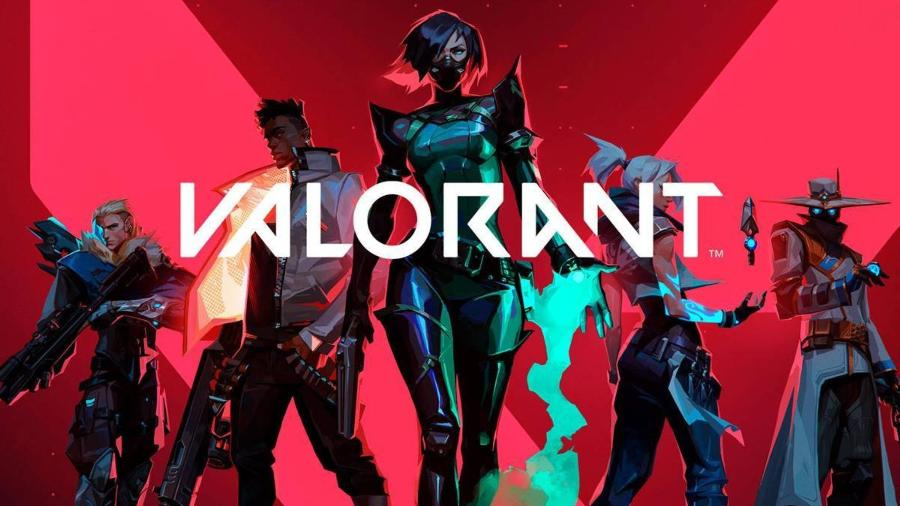

Fortnite lança evento Fragmentado e anima comunidade
O novo evento trouxe desafios inéditos e mudanças especiais no jogo.
A Epic Games lançou oficialmente o evento Fragmentado em Fortnite,
trazendo novas missões, alterações no mapa e recompensas exclusivas
para os jogadores. O evento rapidamente movimentou a comunidade e se
tornou um dos assuntos mais comentados entre os fãs do battle royale...
Ler mais

Minecraft recebe nova atualização com biomas inéditos
A Mojang anunciou uma nova atualização para Minecraft com novos biomas,
criaturas e melhorias na exploração.
A nova atualização de Minecraft promete trazer ainda mais conteúdo para os
jogadores, incluindo biomas inéditos, novos mobs e mudanças no sistema de
sobrevivência. A comunidade recebeu a novidade com entusiasmo nas redes
sociais, principalmente pelas melhorias na exploração e construção dentro
do jogo...
Ler mais

Valorant anuncia nova temporada competitiva
A Riot Games revelou novidades para a nova temporada de Valorant, incluindo
mudanças no competitivo e novos conteúdos.
A nova temporada de Valorant chega com diversas mudanças no modo
competitivo, melhorias na jogabilidade e novidades para os jogadores. A
Riot Games também confirmou novos eventos e recompensas especiais durante a
temporada...
Ler mais

Counter-Strike 2 recebe nova atualização competitiva
A Valve trouxe mudanças importantes no balanceamento e melhorias de desempenho.
A nova atualização de Counter-Strike 2 adicionou melhorias no sistema
competitivo, correções de bugs e mudanças em algumas armas. A comunidade
recebeu as novidades de forma positiva, principalmente pelas melhorias de
desempenho durante as partidas.
Ler mais

Steam inicia nova promoção com grandes descontos
A nova promoção da Steam trouxe descontos em diversos jogos populares.
A Steam iniciou uma nova promoção especial oferecendo descontos em vários
jogos famosos. Títulos de ação, corrida, RPG e sobrevivência estão entre os
mais procurados pelos jogadores durante o evento.
Ler mais

Roblox anuncia novo evento com recompensas exclusivas
O novo evento trouxe missões especiais e itens gratuitos para os jogadores.
Roblox recebeu um novo evento especial com desafios inéditos, recompensas
exclusivas e novos itens cosméticos. A novidade rapidamente chamou atenção
da comunidade e aumentou o número de jogadores ativos na plataforma.
Ler mais